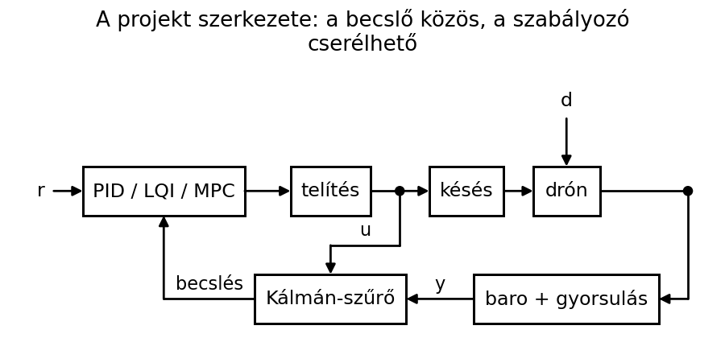
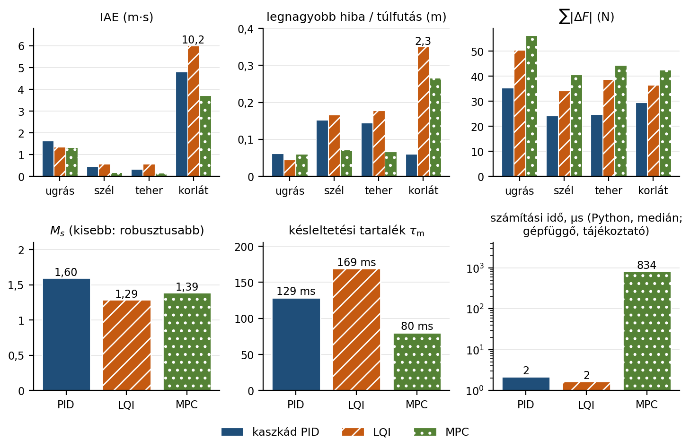

Egy kis drón két méter magasan lebeg egy raktárban. A feladat unalmasnak hangzik: tartsa a magasságot, kövesse a parancsot, és ne csapódjon se a padlónak, se a mennyezetnek. A nehézségek azonban egyszerre jönnek: egy nyitott kapunál széllökés nyomja lefelé, felvesz egy 300 grammos csomagot, a tolóerő korlátos, a motor késik, a barométer zajos, és a processzor a parancsot néha egy-két mintával későn adja ki.
Ebben a záróprojektben ugyanerre a feladatra három szabályozót építünk, amelyeket a könyvben már külön-külön megismertél: kaszkád PID-et gravitációkompenzációval, integráló állapotvisszacsatolást (LQI) és korlátos, offset-free MPC-t. A végén nem az a kérdés, melyik „a legjobb”, hanem hogy adott processzorral és szenzorkészlettel melyiket választanád, és mivel indokolnád. Ehhez tisztességes összevetés kell.
Biztonsági figyelmeztetés: minden eredmény szimuláció. Valódi drónon új szabályozót csak rögzített tesztpadon vagy propeller nélkül, vészleállítóval és felügyelet mellett próbálj ki.
A követelmények (didaktikai, kitalált értékek):
| Jellemző | Követelmény |
|---|---|
| alapjelugrás 2 m → 4 m | a hiba 2 s alatt tartósan 0,1 m alá kerül |
| 3 N-os, 2 s hosszú széllökés lefelé | legfeljebb 0,2 m kitérés |
| 0,3 kg teher felvétele | legfeljebb 0,2 m süllyedés, maradó hiba nélkül |
| süllyedés 6 m → 2 m, N | a magasság nem csökken 1,5 m alá |
| késleltetés | legalább 1 minta (50 ms) elviselése |
| robusztusság |
Tisztességes összevetés (fair comparison) alatt itt azt értjük, hogy a három szabályozó ugyanazt a folyamatot, ugyanazt a mintavételi időt ( ms), ugyanazt a zajsort (rögzített mag: 83), ugyanazokat a forgatókönyveket és ugyanazt a becslőt kapja. Így a különbségek a szabályozási törvényből erednek, nem abból, hogy valamelyik jobb jelet látott.
A drón a Állapotváltozós alak és a futó példák modelljei alfejezet modellje: kg, motorkésleltetés s, légellenállás N·s/m, N. A lebegés ( N) körüli eltérésekkel:
ahol , a parancsolt tolóerő eltérése, pedig erőzavar (N). A szél közvetlenül ; a tömegnövekedés lebegés közben közelítően , tehát 0,3 kg teher kb. N zavarnak látszik. A diszkrét modellt pontos nulladrendű tartóval kapjuk (Diszkrét állapottér és diszkrét tervezés).
Két érzékelőnk van: barométer (magasság, zajszórás 0,05 m) és gyorsulásmérő (a függőleges gyorsulás a nehézségi gyorsulás levonása után, zajszórás 0,2 m/s²). A gyorsulásmérőt ideálisnak vesszük: nincs eltolása (bias), és a drón dőlése nem számít. Ez erős egyszerűsítés.
Egyik szabályozó sem látja közvetlenül a sebességet. Mielőtt tovább olvasol, tippeld meg: ha a sebességet a zajos barométerjel differenciálásával számolnánk, mekkora lenne a zaja? Két egymás utáni minta különbsége m/s szórású – a drón tipikus sebességeivel azonos nagyságrend. Ezért Kálmán-szűrőt (Kalman filter) használunk (A Kálmán-szűrő mint optimális megfigyelő: dualitás), a kiterjesztett állapottal
A zavart véletlen bolyongásnak (random walk) modellezzük: . Ez a belső modell elve a becslőben (Állandósult hiba, rendszertípus és hibaállandók): ha a zavar tartós, a becslő meg tudja tanulni. A gyorsulásmérő a -t szinte azonnal elárulja, mert a zavar közvetlenül a gyorsulásban jelenik meg.

A becslő a kiadott parancsot ismeri; a késleltetésről nem tud. Ez szándékos: a nem modellezett késleltetés a valóságban is ilyen.
1. Kaszkád PID gravitációkompenzációval. Az Előrecsatolás és kaszkádszabályozás alfejezetben bevezetett szerkezet (Előrecsatolás és kaszkádszabályozás): a külső P-hurok sebesség-alapjelet ad, a belső PI-hurok tolóerőt. 1/s, N·s/m, N/m. Szavakban: a lebegés erejét előre ráadjuk, a visszacsatolásnak csak az eltérést kell kezelnie. A belső integrátor visszaszámításos antiwindupot kap (Integrátortelítés és antiwindup). A 2 m/s-os korlát egyben rejtett állapotkorlát: a drón nem kérhet túl nagy süllyedési sebességet.
2. LQI. Az állapothoz integráló állapotot veszünk (Alapjelkövetés állapotvisszacsatolással: előszűrő és integrátor): , , ahol . A súlyok , ; az erősítés , . Telítéskor az integrátort visszaszámítással tartjuk kordában ( s).
3. Offset-free MPC. A Az MPC alapötlete és a korlátozatlan eset és MPC a gyakorlatban: követés, zavar, stabilitás, számítási idő alapján: (1,5 s), , , terminális súly (a DARE-megoldás). Minden mintában célszámítás a becsült zavarral, , majd kvadratikus program a korláttal.
Korlátok nélkül ez a törvény pontosan az LQR ( minden horizonton, mert ). A három szabályozó tehát három különböző módon tünteti el a maradó hibát: kaszkád integrátor, külön integráló állapot, illetve zavarbecslés célszámítással. Az LQI és az MPC ugyanazokat az állapot- és bemenetsúlyokat kapta, hogy a különbség a szerkezetből jöjjön.
Egy mintavételi lépés sorrendje mindhárom esetben ugyanaz:
A számítási igény durva becslése mintánként: PID és LQI néhány tíz szorzás; az MPC iterációnként nagyjából szorzás, a mi forgatókönyveinkben átlagosan 2, legrosszabb esetben 37 iteráció, azaz néhányszor tízezer szorzás. A Python-implementáció mediánideje ezen a gépen néhány mikromásodperc (PID, LQI), illetve nagyságrendileg egy–néhány ezredmásodperc (MPC) – ez gépfüggő, tájékoztató érték. A ms-hoz képest az MPC is bőven belefér, de a legrosszabb esetet kell mérni a célprocesszoron, nem a mediánt (Mintavételi idő, késleltetés és időzítési jitter).
A controlkit.projects_b modul tartalmazza a becslőt, a
három szabályozót, a forgatókönyveket és a mutatókat. Először a becslő:
mit ad hozzá a gyorsulásmérő?
import numpy as np
from controlkit import projects_b as pb
K, K_I, poles = pb.reference_drone_lqi()
print("LQI: K =", np.round(K[0], 3), " K_I =", np.round(K_I[0], 3))
for sensors, name in (((0, 1), "baro + gyorsulás"), ((0,), "csak barométer")):
s = pb.drone_estimator_std(sensors)
print(f"{name:17s} szórás: h {s[0]:.3f} m, v {s[1]:.3f} m/s, d {s[3]:.3f} N")LQI: K = [20.037 8.006 0.345] K_I = [-7.398]
baro + gyorsulás szórás: h 0.018 m, v 0.037 m/s, d 0.127 N
csak barométer szórás: h 0.027 m, v 0.114 m/s, d 0.343 NA sebességbecslés szórása a gyorsulásmérővel nagyjából harmadannyi, a zavaré kevesebb mint fele.
Most a négy rögzített forgatókönyv. Az IAE az eseménytől számított , a „hiba” ugrásnál a túlfutás, zavarnál a legnagyobb eltérés; a TV (total variation) a parancs változásainak összege, a beavatkozó terhelésének és a zajérzékenységnek a mérőszáma.
table = pb.summary_table()
print("forgatókönyv törvény IAE hiba beáll. TV min h")
for sc in pb.SCENARIOS:
for c in pb.CONTROLLERS:
m = table[sc, c]
print(f"{sc:12s} {c:6s} {m['iae']:7.3f} {m['e_max']:6.3f} {m['t_settle']:6.2f}"
f" {m['tv']:6.1f} {m['h_min']:7.2f}")forgatókönyv törvény IAE hiba beáll. TV min h
step pid 1.637 0.062 1.90 35.3 1.99
step lqi 1.351 0.045 1.15 50.4 1.99
step mpc 1.333 0.061 1.05 56.3 1.99
wind pid 0.454 0.152 4.05 24.1 1.87
wind lqi 0.568 0.166 4.15 34.1 1.83
wind mpc 0.176 0.071 0.00 40.6 1.94
load pid 0.320 0.144 1.25 24.7 1.86
load lqi 0.563 0.178 5.25 38.7 1.82
load mpc 0.156 0.067 0.00 44.3 1.93
limit pid 4.802 0.061 3.35 29.5 1.94
limit lqi 10.242 2.337 inf 36.4 -0.34
limit mpc 3.708 0.266 2.70 42.4 1.73Végül a lineáris robusztussági mutatók. A hurkot a beavatkozónál vágjuk fel; a függvény magát a programozott törvényt linearizálja, így pontosan azt vizsgálja, amit a szimuláció futtat.
for c in pb.CONTROLLERS:
q = pb.drone_robustness(c)
print(f"{c}: M_s {q['Ms']:.2f}, φ_m {q['pm']:.1f}°, ω_c {q['wc']:.1f} rad/s, "
f"τ_m {1000 * q['tau_m']:.0f} ms, megengedett késés {q['delay_samples']} minta")pid: M_s 1.60, φ_m 39.3°, ω_c 5.3 rad/s, τ_m 129 ms, megengedett késés 2 minta
lqi: M_s 1.29, φ_m 51.7°, ω_c 5.3 rad/s, τ_m 169 ms, megengedett késés 3 minta
mpc: M_s 1.39, φ_m 49.8°, ω_c 10.9 rad/s, τ_m 80 ms, megengedett késés 1 mintaAlapjelugrás. Az LQI és az MPC IAE-je szinte azonos (1,35 és 1,33 m·s), a kaszkád lassabb (1,64), mert a sebesség-alapjelet 2 m/s-ban korlátozza. A zaj miatt mindhárom kb. 0,05–0,06 m-rel „túlfut”; zaj nélkül az ugrás gyakorlatilag túllövés nélküli.
Széllökés és teher. Itt az MPC messze a legjobb: a kitérés 0,07 m körül marad, a PID-é 0,15 m, az LQI-é 0,17–0,18 m. Miért? A becslő a gyorsulásmérőből szinte azonnal látja a zavart, és az MPC ezt közvetlenül ellentételezi a célszámításban. A PID és az LQI integrátora viszont a magassághibából „tanulja meg” a zavart, ami lassabb. Ez nem az MPC varázsa: ugyanezt a zavarkompenzációt PID-hez és LQI-hez is hozzáadhatnád előrecsatolásként.
Korlátos süllyedés. Az LQI a 4 m-es hibára azonnal nulla tolóerőt kér, a drón szabadon esik, és amikor fékezne, csak 2,2 m/s² gyorsulás áll rendelkezésre: a magasság −0,34 m-ig fut (a modellben nincs talaj; a valóságban ez becsapódás). Az antiwindup itt nem segít: a baj nem az integrátorban, hanem abban van, hogy a törvény nem tudja, mennyire tud fékezni. Az MPC az 1,5 s-os horizonton előre látja a fékezést, és 1,73 m-nél megáll; -zel viszont ő is a talaj alá futna (−0,37 m). A PID-et a m/s korlát menti meg – egy egyszerű, a processzor szempontjából ingyenes trükk.

A PID és az LQI mérete miatt a két robusztussági mutató a mérleg másik oldala: az MPC a gyors reakcióért nagyobb vágási körfrekvenciával ( a rad/s helyett), kisebb késleltetési tartalékkal és a legnagyobb parancsingadozással fizet. „A beavatkozó jel is eredmény.”
Ha ismernénk az új tömeget, a gravitációkompenzáció azonnal helyes lenne. Rekurzív legkisebb négyzetekkel (recursive least squares, RLS; Legkisebb négyzetek, ARX-modell és gerjesztés) becsülhetjük: a függőleges erőegyensúlyból ahol a motor modelljéből számolt tolóerő. Az ismeretlen paraméter , a regresszor a zárójeles kifejezés, a felejtési tényező . A teher felvétele után 1 s-mal kg, 4 s-mal 1,29 kg. Ha a korrekciót a PID és az LQI kimenetéhez adjuk, a teherfelvétel IAE-je 0,32-ről 0,29-re, illetve 0,56-ról 0,32 m·s-ra csökken.
Van azonban csapda: a széllökés alatt az RLS 1,25 kg-os tömeget „mér”, pedig a tömeg nem változott. Lebegés közben egy állandó lefelé ható erő és egy többletsúly ugyanazt a mérési adatot adja: a két hatás nem különböztethető meg, amíg a tolóerő nem változik érdemben (hiányzik a gerjesztés). Az RLS valójában a „hiányzó függőleges erőt” becsli. Zavarkompenzációnak ez hasznos, tömegmérésnek nem. A fontos tanulság: egy becsült paraméter csak annyit ér, amennyit az adat gerjesztése megkülönböztet.
| kaszkád PID | LQI | MPC | |
|---|---|---|---|
| 1,60 | 1,29 | 1,39 | |
| 39,3° | 51,7° | 49,8° | |
| 129 ms | 169 ms | 80 ms | |
| erősítés alsó–felső határa | 0,15 – több mint 20 | 0,09 – 16 | 0,08 – 5,2 |
| lineárisan megengedett késés | 2 minta | 3 minta | 1 minta |
Az erősítési határ itt a beavatkozó hatásosságának szorzója: ennyivel gyengülhet vagy erősödhet a motor, mielőtt a lineáris hurok instabillá válik (a becslő ilyenkor is a névleges modellt hiszi). A szimuláció igazolja a lineáris jóslatot: 2 minta (100 ms) késéssel az MPC parancsa már rezeg (TV 505 N), 3 mintánál mindhárom törvény lengésbe jön. A késleltetés kezelése: a késleltető állapot felvétele a modellbe (Diszkrét állapottér és diszkrét tervezés), vagy a sávszélesség csökkentése (nagyobb ).
A 1. záróprojekt: DC-motor pozíciószabályozása mintájára:
| Pont | Döntés | Indoklás, eredmény |
|---|---|---|
| modell | lineáris, motorkésés + légellenállás | a tolóerő-korlát külön, telítésként |
| mintavétel | ms | közös a három törvényre; PID/LQI gyorsabban is futhatna |
| becslő | Kálmán, | a gyorsulásmérő nélkül a szórása 3-szoros |
| PID | -korlát 2 m/s | egyszerű, korlátbiztos, de lassabb követés |
| LQI | s | legjobb tartalékok; korlát mellett alapjelkorlát kell |
| MPC | , offset-free | legjobb zavarelhárítás; kis , nagyobb számítás |
| teljesítmény | lásd a táblát | az LQI a süllyedési követelményt nem teljesíti |
| robusztusság | – | mindhárom teljesíti a előírást |
A specifikációval összevetve: a PID mindent teljesít (az ugrás beállása 1,9 s), az MPC is; az LQI a korlátos süllyedésben elbukik, hacsak az alapjel változási sebességét nem korlátozzuk.
Választás processzor és érzékelő szerint (mérnöki ítélet, nem általános törvény):
Továbbvitt eredmény. A tisztességes összevetés módszertana: azonos folyamat, mintavételi idő, becslő, zajsor és forgatókönyvek; teljesítmény és beavatkozó jel és robusztusság és számítási igény együtt, a korlátos esetben külön vizsgálva. A Vegyes vizsgafeladatsor ítélőképesség-feladatai ezt a szempontrendszert kérik számon.
ref_rate=1) a limit forgatókönyvben mindhárom
törvényre. Hogyan változik a minimális magasság és az IAE? Mit
veszítesz?limit forgatókönyvben, és vizsgáld
meg a TV-t és az iterációszámot. Mi az oka a változásnak?A drón magasságtartását kaszkád PID-del, LQI-vel és offset-free MPC-vel valósítottuk meg közös Kálmán-szűrős becslővel (barométer + gyorsulásmérő), ms-mal és rögzített forgatókönyvekkel. Az MPC a legjobb zavarelhárító (0,07 m kitérés), de legkisebb a késleltetési tartaléka (80 ms); az LQI-nek a legjobbak a tartalékai, de a korlátos süllyedésben elbukik; a PID egyszerű, a sebességkorlát miatt korlátbiztos. Az RLS lebegés közben a tömeget és az állandó erőt nem különbözteti meg. A tisztességes összevetés módszertana (azonos feltételek, teljesítmény, beavatkozás, robusztusság, számítás) a vizsgafeladatsor alapja.
sc = pb.DroneScenario("combo", "teher + szél", 14.0, 2.0, ((0, 2.0),), 2.0,
wind=((6.0, 9.0, -3.0),), payload=(2.0, 0.3))
for d in (0, 2):
for c in pb.CONTROLLERS:
m = pb.drone_metrics(pb.simulate_drone_project(c, sc, delay=d), sc)
print(f"késés {d}, {c}: IAE {m['iae']:.3f}, hiba {m['e_max']:.3f} m, TV {m['tv']:.0f}")késés 0, pid: IAE 0.817, hiba 0.246 m, TV 38
késés 0, lqi: IAE 1.285, hiba 0.324 m, TV 53
késés 0, mpc: IAE 0.320, hiba 0.094 m, TV 61
késés 2, pid: IAE 0.872, hiba 0.334 m, TV 63
késés 2, lqi: IAE 1.319, hiba 0.368 m, TV 62
késés 2, mpc: IAE 0.575, hiba 0.141 m, TV 391Késés nélkül az MPC a legjobb; 2 minta késéssel az MPC parancsa hevesen rezeg (TV több száz N), a PID ekkor a józan választás, vagy az MPC modelljét kell a késéssel bővíteni.
6. feladat.
from controlkit import mpc
ctrl = pb.DroneMPC(12.0)
ctrl.mpc = mpc.drone_mpc(12.0, x_min=[-np.inf, -2, -np.inf], x_max=[np.inf, 2, np.inf])
run = pb.simulate_drone_project("mpc", "limit", controller=ctrl)
m = pb.drone_metrics(run, "limit")
print(f"min h {run.h.min():.2f} m, IAE {m['iae']:.2f}, TV {m['tv']:.0f} N, "
f"max iteráció {max(ctrl.iterations)}")min h 1.94 m, IAE 4.89, TV 117 N, max iteráció 117A korláttal ( m/s, puha korlát) a minimum 1,94 m, de az IAE 3,71-ről 4,89 m·s-ra nő, a TV 42-ről 117 N-ra, a legnagyobb iterációszám 37-ről 117-re. A zajos sebességbecslés miatt a korlát a határon mintánként ki-be aktiválódik, és a törvény erre rángatással válaszol. Gyógyszer: a becslő simítása, korlát-tartalék, vagy a korlát a referencia szintjén.